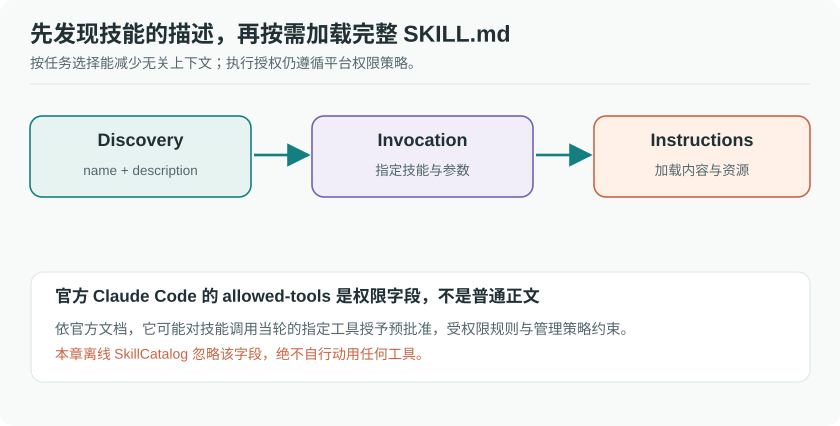

Skills 与项目指令：按需加载、生命周期和权限边界
从 SKILL.md 的发现、调用和内容生命周期，理解 Claude Code Skills、CLAUDE.md 与 AGENTS.md 的真实关系，并用可测试目录加载器演示安全边界。
为什么不能把所有技能全文放进开场提示
一个大型 Coding Agent 可能需要代码审查、故障调试、实验复现和文档撰写等完全不同的工作流。如果启动时全部加载，每次请求都携带大量无关规则，不但浪费上下文，也容易让不同工作流互相干扰。
更合理的做法是先暴露名字与用途，再根据任务选择完整内容。这就是按需技能加载的核心直觉。Claude Code 的官方 Skills 文档也明确区分目录/描述发现与调用后的正文生命周期。

SKILL.md 的最小结构与用途
一个技能通常保存为 .claude/skills/<name>/SKILL.md，包含 YAML frontmatter 与 Markdown 说明。说明应讲清在什么场景使用、处理什么输入、产生什么输出、如何验收。支持的字段与位置请参照使用版本的官方文档。
---
name: review
description: Review Python code for correctness and tests
---
# Review workflow
1. Inspect the relevant code and nearby tests.
2. Cite line numbers for any reported defect.
3. Separate confirmed failure from hypothesis.
4. Do not make edits unless the user requested them.示例不包含外部 Shell、远程模板或不可验证性能指标。用户深链进入文章时，依然能知道 Skill 与系统工具、项目指令的差别。
CLAUDE.md 与 AGENTS.md：现实中并不总同时读取
Claude Code 的公开文档目前支持读取 AGENTS.md，但默认模式下，若工作目录及其父目录存在适用的 CLAUDE.md（含指定本地变体），可能优先使用它，而不是同时读取 AGENTS.md；可以在 Project instructions 配置中选择两者一同读取。
不同版本、内置插件与受管控设置会影响这一行为。协作仓库应说明预期、避免冲突，并在真实环境验证哪份指令被加载，而不是假定 AGENTS.md 总会自动生效。
Skills 的 allowed-tools 不是单纯的“提示词”
需纠正一种过度简化的说法：“技能只是文字，永远不能影响工具授权”。Claude Code 官方 Skills 文档说明 frontmatter 的 allowed-tools 可在调用该技能的当轮预批准列出的工具，随后该授权会清除；其它未覆盖工具仍由权限系统判定。
为什么这是安全边界
技能来源、工具预批准范围和宿主的受管控策略要一起审查。不能把从未知仓库下载的 Skill 直接当作安全策略。与之不同，本章纯 Python 演示仅解析 name 与 description，完全忽略所有权限字段，不执行任何工具。
实现一个不会执行技能内容的发现目录
源码 skill_catalog.py 使用标准库实现简化的目录发现：只接受符合命名规则的子目录，要求 SKILL.md 有基本 frontmatter，拒绝 symlink 和路径穿越，发现阶段只返回名字与描述。
catalog = SkillCatalog(Path("./skills"))
print(catalog.descriptions())
# (("review", "Review Python code"),)
skill = catalog.load("review")
print(skill.instructions)这个解析器只支持最小“每行 key: value”的简单字段，不是完整 YAML 解析器，也不模拟 Claude Code 的变量替换、动态命令、技能注入或权限管理。它用于解释发现与加载之间的数据流。
常见失败：误触发、规则冲突与持久化
| 失败 | 根因 | 处理建议 |
|---|---|---|
| 技能不触发 | 描述与任务语义不匹配 | 改进 description 并做真实触发评估 |
| 技能频繁误触发 | 描述过宽 | 明确适用范围和排除条件 |
| 技能内容长期残留 | 已加载正文进入对话 | 区分内容生命周期与临时权限 |
| 项目指令冲突 | CLAUDE.md / AGENTS.md 配置 | 核查加载行为、层级与管理策略 |
官方文档指出 Skill 正文被调用后可留在对话中；因此不要把“加载时机”理解为每一轮重新读取文件，或假定内容会自动失效。
练习：将描述筛选与授权拆开测试
运行 python3 -m unittest discover -s examples -p 'test_*.py'，检查 test_skill_catalog.py：发现只拿到描述、显式调用才能读正文、路径穿越和 symlink 被拒绝、权限字段不会触发 Bash。
evidence_links 清单及版本字段，同时编写“用户删除技能后下一次发现不再显示”的测试。仍然不要从技能正文提取可执行命令。参考资料与版本边界
- Claude Code: Skills — 加载生命周期、frontmatter、调用与 allowed-tools 现行语义
- Claude Code: Memory and AGENTS.md — CLAUDE.md / AGENTS.md 默认与自定义加载规则
- Claude Code: Permissions — 管理策略与权限模式的优先级
本地 SkillCatalog 是限制能力的教学加载器；官方 Skills 的动态注入、工具权限字段与解析器并未在此实现。